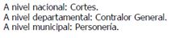
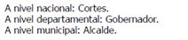
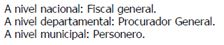
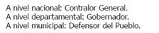

En un salón de clases, un profesor les explica a sus estudiantes cuáles son las diferentes etnias de Colombia y sus costumbres. Un estudiante levanta la mano y comenta que su papá siempre dice que los indígenas son personas poco evolucionadas por la forma como visten y por sus creencias. El profesor les dice a sus estudiantes que en el anterior comentario hay un prejuicio, porque
a. el papá reconoce que existen otras etnias que tienen costumbres distintas. b. el papá reconoce que hay diferentes formas de desarrollo de los pueblos. c. el papá desconoce que las personas poco evolucionadas también tienen derecho a manifestarse. d. el papá desconoce que las personas son iguales independientemente de sus creencias o cultura.
Un ciudadano chino llega a vivir a un municipio de Colombia. Aunque es el primer chino en este municipio, se instala y abre un restaurante de comida típica de su país. Sin embargo, al pasar el tiempo casi no tiene clientes. Hay gente que dice que no va al restaurante porque los chinos son gente muy sucia y comen todo tipo de animales, y sospechan que la comida que él vende se prepara de manera poco higiénica. Si el dueño del restaurante se defendiera de la gente del pueblo, diría que estos comentarios
a. se basan en prejuicios porque no pueden hablar de él ni de su comida, sin conocerlos. b. se basan en prejuicios porque toda la comida china es muy saludable. c. se basan en el amplio contacto que han tenido los habitantes del pueblo con otros chinos. d. se basa en la experiencia que han tenido los habitantes ayudándole al chino a cocinar.
Una de las consecuencias del conflicto armado en Colombia es el desplazamiento de miles de personas y familias que se han visto en la necesidad de abandonar sus hogares para escapar de la violencia. ¿Cuál de las siguientes instituciones se encarga, a nivel nacional, de defender y garantizar los derechos de estas personas?
a. La Procuraduría. b. La Contraloría. c. La Defensoría del Pueblo. d. La Corte Constitucional.
Desde el 2005 funcionan en Bogotá comedores comunitarios que atienden de manera gratuita a niños y niñas, mujeres embarazadas, madres con hijos recién nacidos, entre otras personas. El objetivo de este programa es:
a. aprovechar el exceso de producción de algunos alimentos. b. favorecer el acceso a los alimentos de los niños y las niñas de Bogotá. c. garantizar que todos los niños hagan amigos mientras almuerzan. d. controlar la cantidad de alimentos que las familias consumen.
La estructura del Estado colombiano tiene tres ramas del poder público (la Ejecutiva, la Legislativa y la Judicial), que en los niveles nacional, departamental y municipal tienen distintos representantes.
a.  b.  c.  d. 